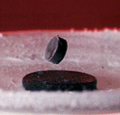
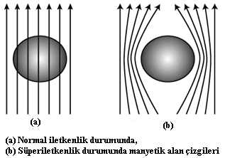
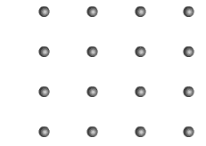

Meissner olayının anlaşılması ve süperiletkenlerin manyetik alan ile etkileşiminin gözlemlenmesi.
Sıvı azot
Süperiletken
Küçük mıknatıs
Süperiletken bir kap içerisine yerleştirilir ve üzerine sıvı azot dökülerek kritik sıcaklığın altına soğutulur.
Yeterince soğuduktan sonra mıknatıs dikkatlice süperiletkenin üzerine bırakılır.
Mıknatısın havada asılı kaldığı gözlemlenir.

Belirli bir kritik sıcaklığın altına indirildiğinde elektriksel direnci tamamen ortadan kalkan maddelere süperiletken denir.
Normal iletkenlerde elektronlar kristal yapı içinde ilerlerken saçılmaya uğrar ve enerji kaybı oluşur. Ancak süperiletkenlerde bu saçılma ortadan kalkar ve akım kayıpsız şekilde akabilir.
Bu nedenle süperiletken içerisinde oluşan akım, dış bir etki olmadığı sürece teorik olarak sonsuza kadar devam edebilir.
Süperiletkenler sadece sıfır dirençli değildir; aynı zamanda mükemmel diamanyetik özellik gösterirler.
Yani dış manyetik alanı tamamen dışlarlar. Bu durum Meissner etkisi olarak adlandırılır.

Süperiletkenler iki ana gruba ayrılır:
Tip 1 Süperiletkenler: Genellikle saf metallerden oluşur. Kritik sıcaklığın altına inildiğinde ani bir geçişle süperiletken olurlar ve manyetik alanı tamamen dışlarlar.
Tip 2 Süperiletkenler: Alaşımlar ve seramiklerden oluşur. Daha yüksek kritik sıcaklıklara sahiptirler ve "karma durum" (mixed state) üzerinden süperiletkenliğe geçerler.
Bu maddeler belirli bir aralıkta hem manyetik alanı kısmen geçirir hem de süperiletkenlik gösterir.
İlginç bir şekilde, çok iyi iletken olan bakır, gümüş ve altın süperiletken değildir.
Süperiletkenliği açıklayan en önemli teorilerden biri BCS teorisidir.
Bu teoriye göre elektronlar kristal örgü içinde hareket ederken örgüde titreşimler (fononlar) oluşturur.
Bu fononlar, elektronlar arasında dolaylı bir çekim kuvveti oluşturarak onların çiftler halinde hareket etmesini sağlar.
Bu elektron çiftlerine Cooper çiftleri denir.
Cooper çiftleri, kristal yapı içerisinde saçılmadan hareket eder ve bu sayede elektriksel direnç ortadan kalkar.
Bu mekanizma özellikle düşük sıcaklık süperiletkenlerini açıklamada oldukça başarılıdır.
